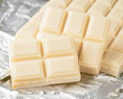
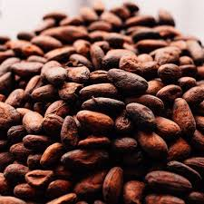

The History Of White Chocolate
Is It Chocolate?
White chocolate originates from the cocoa (cacao) plant, but it is not “chocolate.” According to the FDA, to be called ‘chocolate’ a product must contain chocolate liquor, which is what gives it the bitter intense chocolate flavor (and color) to dark and milk chocolates. Because it has no cocoa liquor, white chocolate has very little caffeine compared to regular chocolate.White chocolate was invented by the Nestlé company in Switzerland. The first white chocolate bar debuted in 1930. March 5th is National White Chocolate Cheesecake Day. September 22nd is National White Chocolate Day.
White chocolate contains cocoa butter, milk solids, sugar, lecithin and flavorings (usually including vanilla). White chocolate contains only trace amounts of caffeine that is present in cocoa solids. The melting point of cocoa butter, its primary cacao bean component, is high enough to keep white chocolate solid at room temperature, yet low enough to allow white chocolate to melt in the mouth. Cocoa butter is one of the most stable fats known, containing natural antioxidants that prevent rancidity and give it a storage life of 2 to 5 years. White chocolate goes well with lemon, berries, or milk and dark chocolate.
For years, connoisseurs dismissed white chocolate — a confection made with cocoa butter, milk solids and sugar, but with none of the cocoa solids that give darker chocolate its recognizable flavor and color. "White chocolate or white lie?" one online video asks. The host opens with: "If you love white chocolate, I hate to break it to you: You're not eating chocolate." Besides the absence of cocoa solids, the reputation stems from the fact that white chocolate products often contain such additives as palm oil and other fillers, plus an excess of sweeteners. But a growing number of specialty chocolate companies are now giving the same attention to white chocolate as dark or milk chocolate, and trying to highlight the ways it can showcase flavor. A cocoa bean is made up of roughly equal parts cocoa butter and cacao nibs. Cocoa butter is what gives chocolate its rich mouthfeel, and the nibs hold most of the distinctive smell and taste. Absent of nibs, "white chocolate is basically just sweet fat," says Clay Gordon, creator of the Chocolate Life website, "with a melt that is unencumbered by the nonfat cocoa solids, or cocoa powder." For a chocolate to be labeled as chocolate, as opposed to candy, the Food and Drug Administration requires that the bar be made up of at least 10 percent cocoa mass (nibs plus the cocoa fat inherent to the bean) , with no specifications about cocoa butter. White chocolate, on the other hand, has to have a cocoa butter content of at least 20 percent and does not require the inclusion of nibs. The FDA established these standards in 2004 in response to petitions filed by the Hershey Company and the Chocolate Manufacturers Association (now part of the National Confectioners Association).
White Chocolate Recipe
Ingredients:16 oz Cocoa butter, 1 T lecithin, 14 oz powdered dry milk, 14 oz sugar, a few ounces of milk fat or cream powder.
Because there are no cocoa solids present, you don't have to worry about roasting, cracking or grinding any cocoa beans. You can go straight to the Santha for refining. Place the melted Cocoa butter in your Santha Wet Grinder. It is very helpful to have your solid ingredients warmed up to at least 120 F, including the Santha drum. Slowly add the 14 oz of sugar and 14 oz of milk powder into the melted cocoa butter while the melanger is running. Run the Melanger until the white chocolate is of the smoothness you desire. I find 8-10 hours is about right. Your tastes may vary. After it is out of the Melanger temper and mold up your chocolate into the shape of your choice. Place into a cool, dry place to solidify and then unmold, usually about 24 hours later to be safe. This can be done in a refrigerator if you wish. I have not found that white chocolate benefits from the resting like real chocolate, but I have found you need to protect it from heat and light a bit more or it can turn "off".